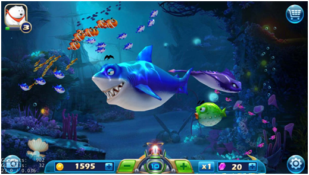
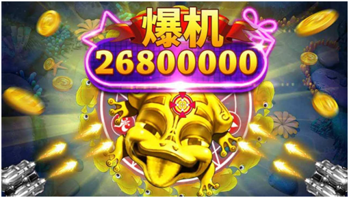
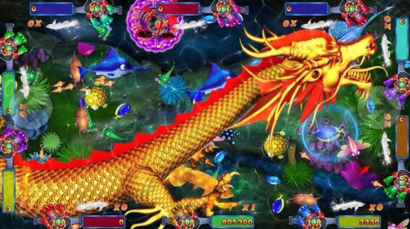

如果你去过电玩厅的话，你会发现捕鱼游戏机旁边的人，永远是整个电玩厅最多的。对一般电玩厅来说，这也是主要的盈利机器。而不夸张的说，捕鱼游戏甚至开启了中国移动互联网游戏的浪潮。就以小编本人的经历来说，上大学那会买第一部智能手机的目的，就是为了玩最火的《捕鱼达人》。

毋庸置疑，捕鱼游戏本身具备非常优秀的产品力，花花绿绿的鱼群、铺天盖地的渔网、夸张的金币特效、狂热点击的玩家，都是这种游戏的特色标志。而将捕鱼游戏推向高潮的角色，是坐落在各个小县城，小乡镇的电玩游戏厅。零几年的时候，十几二十岁的乡镇年轻人，没有智能手机，娱乐活动相当匮乏，空闲时间基本上不是泡在网吧就是在电玩游戏厅。泡在网吧的那群人成了游戏迷，而混迹在电玩游戏厅里的，则沉迷于捕鱼。这批人在移动互联网时代到来以后，又紧接着成为了各色各样的棋牌、捕鱼游戏APP受众群体。
那么，捕鱼游戏的具体原理究竟是什么呢？火热的背后又有怎样的原因呢？
先说结论：捕鱼游戏是一种博弈类游戏，本质是和老虎机类似，都是利用概率下注来以小博大，赚取金币。从玩家的角度来看，我们消费金币，发射炮火，打到目标鱼，以一定概率打中，获得金币。这就是捕鱼游戏基本的闭环流程。
听起来有些类似TPS射击类游戏。但是，显然捕鱼游戏和TPS游戏是完全不同的，它常常被分类到“Casino”博弈类类游戏中去。那么二者的本质区别在哪里呢？游戏最关键的点：是什么决定了我们是否打中了目标呢？
对，在捕鱼游戏中，打中与否是由隐藏概率决定的，而不是一套外显的数学公式。也就是说，我们无法通过“打了多少”、“还剩多少血”来直观判断我们打鱼的进度和成功率。甚至可以猜测，我们辛苦打的鱼，它很可能就是根本没有血量的，我打第一下，和打第十下，打中目标的概率，是完全相同的。
于是，我们辛苦打鱼的“策略性”被极大降低，左右结果的只剩下“运气”和“概率”了。从游戏的角度来看，玩家消耗金币打鱼，根据某一概率公式f(x)计算成功率，假如此次成功，则产出给玩家相应鱼的奖金，如果失败，则毫无收获。
赌注是金币，产出仍是金币，捕鱼概率计算的过程是个数值，最终的反馈是0或1，即失败或成功。其间为了满足玩家的心理，往往会设计华丽夸张的动画效果，给玩家“好多钱”的假象。

某捕鱼游戏的华丽特效
对于这种游戏，显而易见，其重点就在于这个“数值”f(x)，其具体机制究竟是什么呢？显然，千人千面，不同捕鱼游戏中的数值设置各不相同。
下面我们从基础信息入手推断：这个f(x)的参数x包括什么？和各参数之间的关系是正相关还是负相关？
首先，玩家打鱼的概率和什么因素有关呢？也就是我们为数值提供的参数x有哪些呢？试想一下，对于每次打鱼行为，有哪些变量？变量可以主要包括：房间基本信息，玩家基本信息，这次开炮的基本信息。
房间基本信息：这个房间是新手房？高级房？不同房间可能对应不同数值。
玩家基本信息：玩家目前的金币量？等级？是不是新手期？是不是付费玩家？不同状态的玩家可能对应不同数值。
这次开炮的基本信息：炮台的位置？炮台的类型？渔网的位置？打到多少鱼？打到鱼的数量？不同的开炮情况可能对应不同数值。
以上这些条件都可能造成数值的不同，具体是不是有影响，可以根据不同的游戏，采用控制变量的方法，从客户端进行实验验证。
笔者这里取出一些个人认为比较重要的条件，从游戏研发方的角度，进行基本分析。从开发者角度出发，开发者的根本目的是：激发玩家赌性，让玩家在游戏中获得乐趣，并加大投入；同时平衡游戏内经济，防止投入产出失衡。同时，开发者做出条件判断以及控制行为，都是有一定成本的。所以开发者会尽量选择简便的方法达成目的。

首先，根据房间基本信息调整数值，不同房间打鱼成功率不同。新手房间往往有一定的保护机制，给玩家的总体回馈大于付出。而越高级的房间，对应鱼越高级，利润越高，同时风险也就越高。也就是说，越高级的房间，打鱼成功率越低。另外，在很多理论中有房间的吞吐量概念。简单来讲，就是说当房间产出金币多于预期值时，可能也会降低整体成功率。这一点也可以在客户端内实验验证。
第二，根据玩家基本信息调整数值，同一房间内，不同玩家打鱼成功率不同。试想这样一种场景：玩家发现新手房是赚钱的，于是停留在新手房不变。这显然是和研发商的目的矛盾的。
同时，作为研发商，也希望推动玩家前往高端房间，体验高风险、高乐趣的游戏。因此，开发商有必要对玩家的情况进行条件判断，进行负反馈调整。
当玩家目前的金币量高于此房间的某一设定值时，即使此房间原本设定相对平缓，但是此时对于此玩家而言，他的打鱼成功率很可能就会相应降低了。同时，新手保护机制的存在，让新手玩家自带“光环”，成功率偏高。而假如玩家到达某一付费点，则可能比平常更容易失败，刺激玩家付费。
第三，根据这次开炮的基本信息调整数值，同一房间内同一玩家，不同开炮方式，打鱼成功率不同。根据每个捕鱼游戏的系统设计不同，关于炮的火力设定，可能有不同的解释。一般来讲，打鱼成功率和炮的火力数值是成正比的。
这里有一个要点，就是一次开炮打到多少鱼，才能提高成功率呢？也就是一个非常实际的问题：捕鱼游戏是不是有什么特殊技巧呢？我们从实际经验出发，假如一次开炮没有碰到一条鱼，一定是没有收益的。但是，假如一次打到5条鱼，和打5次各打一条鱼相比，又是哪个更划算呢？直观感觉是前者和后者是等价的，但是从研发的角度来想呢？这是一个鼓励玩家尽量一网网住更多鱼的游戏吗？显然并不是。
保险来讲，如果想打某条鱼，就不断地以它为中心射击，并且不去触碰其他小鱼，可能就会是个比较好的策略。至于具体细节，仍是根据具体产品通过控制变量来实验验证。
那么，总结说来，捕鱼游戏是一种以小博大的游戏，玩家通过消耗金币，进入特定数值，输出概率，如果成功，则获得鱼对应的金币。其中成功概率是由数值条件决定，包括房间条件、玩家条件、开炮条件等。纹桃科技致力于捕鱼游戏开发15年，拥有大量捕鱼游戏成功案例。
想开发一款迅速盈利的捕鱼游戏，欢迎咨询热线电话：18711739336

扫码二维码咨询更多捕鱼游戏问题

游戏产品
PRODUCTS

售后服务
SERVICE

技术支持
TECHNOLOGY

运营指导
OPERATING